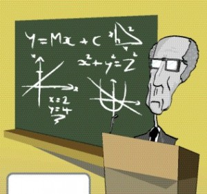

My Experience:
I had taught mathematics in several Govt. colleges and some private engineering colleges in Orissa from 1974 upto 2017. As
I taught from plus two level upto post graduate level in these colleges, my interest
grew in studying the behaviour pattern of the students sitting at the back of the classes. Towards the last
stage , I developed a unque style of teaching mathematics in a class room.